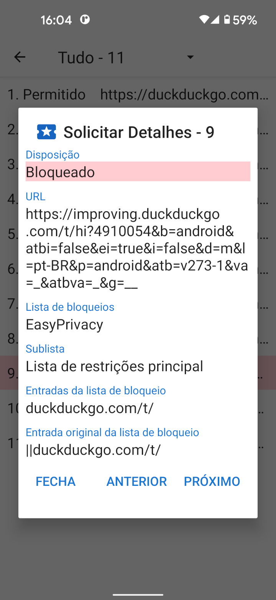

Quando um URL é carregado, ele normalmente faz várias solicitações de recursos para CCS, JavaScript, imagem e outros arquivos. Os detalhes sobre essas solicitações podem ser visualizados na atividade Solicitações. A gaveta de navegação possui um link para a atividade Solicitações e também mostra quantas solicitações foram bloqueadas. Tocar em uma solicitação exibe detalhes sobre por que ela foi permitida ou bloqueada.

O Privacy Browser inclui quatro listas de bloqueio comuns com base na sintaxe do Adblock: EasyList, EasyPrivacy, Fanboy’s Annoyance List e Fanboy’s Social Blocking List. Essas listas de bloqueio são processadas pelo Privacy Browser nas seguintes 22 sublistas, que verificam as solicitações de recursos na ordem listada.
As listas iniciais são comparadas ao início do URL. As listas finais são comparadas ao final do URL. As listas de domínio verificam apenas em alguns domínios. As listas de terceiros só se aplicam se o domínio raiz da solicitação for diferente do domínio raiz do URL principal. Listas de expressões regulares seguem a sintaxe de expressão regular. Cada item da sublista possui uma ou mais entradas. No caso de sublistas de domínio, a solicitação de recurso só é verificada em relação ao item se a primeira entrada corresponder ao domínio do URL principal.
Por causa das limitações no WebView do Android e para acelerar o processamento de solicitações, o Privacy Browser implementa uma interpretação simplificada da sintaxe Adblock. Isso às vezes pode levar a falsos positivos, em que os recursos são permitidos ou bloqueados de maneiras que não eram pretendidas pela entrada original. Uma descrição mais detalhada de como as entradas da lista de bloqueio são processadas está disponível em stoutner.com.
O Privacy Browser tem três listas de bloqueio adicionais.
UltraList e UltraPrivacy
bloqueiam anúncios e rastreadores que EasyList e EasyPrivacy não bloqueiam. O terceiro bloqueia todas as solicitações de terceiros.
Uma solicitação só é considerada de terceiros se o domínio base da solicitação for diferente do domínio base da URL.
Por exemplo, se www.website.com carregar uma imagem de images.website.com,
isso não é bloqueado como uma solicitação de terceiros porque ambos compartilham o mesmo domínio base de website.com.
Bloquear todas as solicitações de terceiros aumenta a privacidade, mas essa lista de bloqueio é desabilitada por padrão porque quebra um grande número de sites.